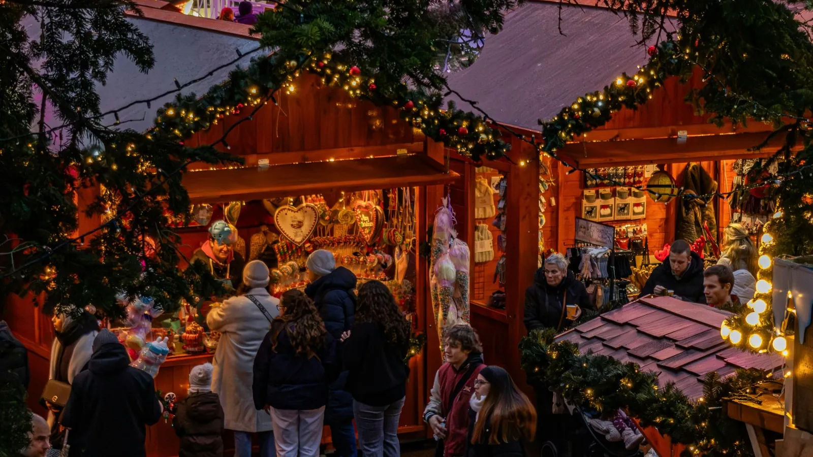

In breve
Per il Natale classico con neve, casette di legno e vin brulé vai in Alto Adige e Trentino: Bolzano, Merano, Bressanone e Trento hanno i mercatini più famosi d'Italia, tutti raggiungibili in treno. Per un Natale più italiano e meno alpino ci sono le botteghe dei presepi di Napoli e la fiera di Piazza Navona a Roma. Organizzati partendo dall'8 dicembre, quando inizia la stagione, e ricorda che il 25 dicembre e il 1° gennaio è chiuso quasi tutto.
I mercatini delle Alpi: Alto Adige e Trentino
Bolzano
Il mercatino di Natale più antico e più grande d'Italia, in Piazza Walther sotto il Duomo. Nel 2026 l'inaugurazione è la sera del 26 novembre e le casette sono aperte dal 27 novembre al 6 gennaio, dalle 10 alle 19 (il 24 dicembre fino alle 16, il 25 chiuso). Circa 112 casette, concerti quasi tutte le sere e tantissima gente il sabato. La stazione è a due minuti a piedi.
Merano
Più piccolo ed elegante, lungo la passeggiata sul fiume, con l'aria da città termale. Abbinalo a un pomeriggio alle Terme Merano: le piscine all'aperto con vista sulle montagne d'inverno sono il vero regalo. Circa 40 minuti di treno da Bolzano.
Bressanone
Il più raccolto dei tre, intorno a piazza Duomo, con circa 44 casette: basta mezza giornata. Perfetto come tappa tra Bolzano e le piste da sci.
Trento
Apre circa una settimana prima (intorno al 20 novembre), tra Piazza Fiera e Piazza Cesare Battisti. Più città che montagna, con buone bancarelle di cibo e le Dolomiti intorno.
Napoli, Roma e il Sud
- Napoli – Via San Gregorio Armeno: la via degli artigiani del presepe, aperta tutto l'anno ma al massimo a dicembre. Pastori minuscoli, pizzerie in miniatura e ogni anno le statuine di calciatori e politici. Vai la mattina in un giorno feriale: nei weekend di dicembre si cammina spalla a spalla.
- Roma – Piazza Navona: la fiera di Natale e della Befana riempie la piazza fino al 6 gennaio, con dolciumi, giocattoli e la giostra. Aggiungi l'albero e il presepe giganti in Piazza San Pietro.
- Messa di mezzanotte a San Pietro il 24 dicembre: i biglietti sono gratuiti ma vanno chiesti in anticipo al Vaticano; si può comunque seguire dalla piazza sui maxischermi.
Altri posti da non perdere
- Gubbio (Umbria): "l'albero di Natale più grande del mondo", fatto di luci sul pendio del Monte Ingino, acceso intorno al 7 dicembre.
- Verona: mercatini in Piazza dei Signori e la grande stella illuminata che esce dall'Arena.
- Montepulciano (Toscana): un villaggio di Natale in un borgo medievale in collina, facile da abbinare alle colline del vino.
- Milano: la fiera tradizionale "Oh Bej! Oh Bej!" intorno al 7 dicembre (Sant'Ambrogio) e l'albero in Piazza del Duomo.
Date e chiusure
| Data | Cosa succede | Cosa aspettarsi |
|---|---|---|
| 8 dicembre | Immacolata, festivo | Si accendono gli alberi, ponte lungo, mercatini pieni |
| 24 dicembre | Vigilia, cena in famiglia | Negozi chiudono presto, ristoranti spesso pieni |
| 25 dicembre | Natale | Quasi tutti musei, negozi e molti ristoranti chiusi |
| 26 dicembre | Santo Stefano, festivo | Alcuni musei aperti, treni con orario festivo |
| 31 dic – 1 gen | Capodanno | Grandi concerti gratuiti in piazza; il 1° quasi tutto chiuso |
| 6 gennaio | Epifania (Befana) | Ultimo giorno dei mercatini, festivo |
Prima di fissare il giorno di un grande museo controlla gli orari festivi: i Musei Vaticani, per esempio, sono chiusi il 25 e il 26 dicembre. I treni circolano, ma con orari ridotti nei festivi: prenota presto l'alta velocità, le settimane di Natale si riempiono.
Cosa mangiare
- Panettone (Milano) e pandoro (Verona): comprali in una vera pasticceria, non al supermercato.
- Nei mercatini delle Alpi: vin brulé, strudel, canederli e speck.
- Napoli: struffoli col miele e la cena di pesce della Vigilia.
- Roma: anche qui la Vigilia è di pesce; il 25 pasta in brodo e arrosti.
Consigli
- Prenota adesso gli hotel a Bolzano e Merano per i weekend di dicembre: confronta gli hotel a Bolzano.
- Vai in treno: in auto nei centri storici trovi ZTL e parcheggi pieni. Leggi ZTL in Italia.
- Vestiti a strati: sulle Alpi dopo il tramonto si va spesso sotto zero.
- Controlla gli scioperi dei treni prima di partire, anche a dicembre.
- Vuoi aggiungere Venezia? Leggi Venezia in 2 giorni: d'inverno spesso c'è la nebbia ed è magica.
Organizza il tuo Natale in Italia
Alcuni link sono affiliati: se prenoti tramite loro non paghi nulla in più e aiuti 687 a restare gratuito.
Il Natale in Italia, organizzato in pochi minuti.
In 687 Italy costruisci il viaggio di Natale a tappe: mercatini, treni con gli avvisi di sciopero e il meteo giorno per giorno. Se la neve o un ritardo cambiano i piani, NOW ricostruisce il resto della giornata.
Fonti
- Alto Adige, sito turistico ufficiale
- Azienda di soggiorno di Bolzano
- Musei Vaticani (giorni di apertura)
- Trenitalia
Verificate su questi siti ufficiali a novembre 2026. Prezzi e regole possono cambiare: controlla sempre prima di partire.